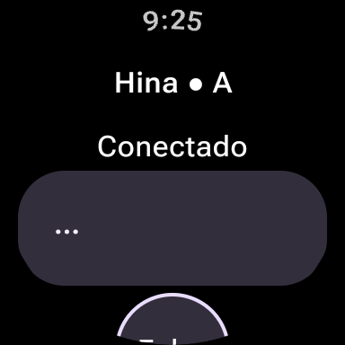
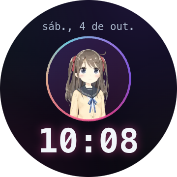
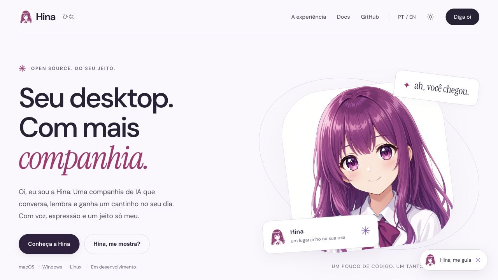

HinaWatch
set. a out. 2026 · Kotlin · Wear OS · 58 commits
O app do pulso reúne a tela inicial, o retrato Live2D e o mostrador em pequenas interfaces circulares. O mesmo modelo ativo no PC é desenhado na GPU do relógio com o Cubism SDK for Java em OpenGL ES 2. Só chegam eventos pelo WebSocket, nunca vídeo. Push-to-talk, HUD do modo pet e pedidos de permissão do agente respondidos no pulso. No TicWatch Pro 3 Ultra, o build sem depuração baixou o quadro do avatar de 17,5 para 9,4 ms.
HinaMobile
out. 2026 · Kotlin · Android · ML Kit
A câmera frontal acha o rosto no aparelho e manda ao relógio só a posição, até 15 vezes por segundo, pelo Data Layer do Wear OS. Sem mensagem por 1,5 s, o olhar volta ao de costume. Nenhuma imagem sai do celular.
hina2d
out. 2026 · Cubism · Git LFS
Produção da identidade Live2D própria: PSDs revisados, base editável no Cubism, auditorias e scripts de conferência. Uma pipeline anterior (psd2live, rembg) separou as camadas a partir da arte.

out. 2026 · HTML · CSS · JS · sem build
A landing atual apresenta a experiência, o dashboard e os avatares em movimento. A própria Hina conduz a visita, com voz e uma apresentação por contexto. Documentação em português e inglês.
hina-releases
out. 2026 · instaladores
Instaladores, guia de uso, licença (gratuita para uso pessoal) e política de privacidade em português e inglês. As issues são o canal de bugs.
Personas
YAML · atratores
Hina, Haru, Wanko, Mochi e outras: cada persona é uma constituição em YAML que define a linha de base do humor e os atratores do genoma. Trocar de avatar troca de persona.